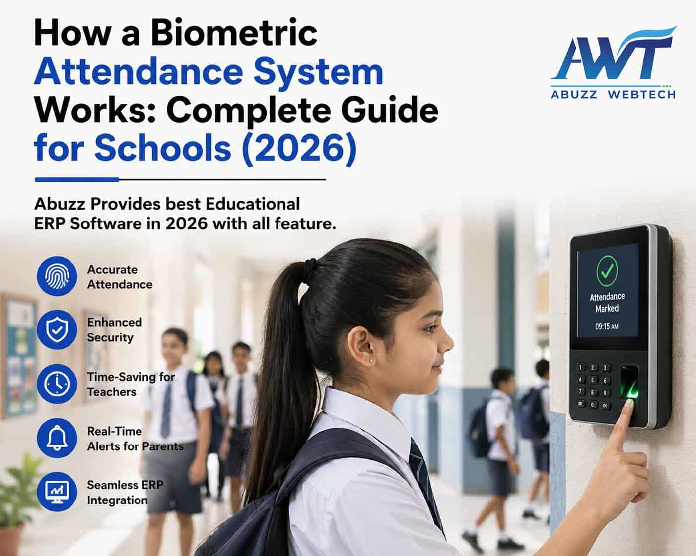

27 April 2026
How a Biometric Attendance System Works: Complete Guide for Schools (2026)
In today’s fast-paced digital era, educational institutions are rapidly adopting smart technologies to improve efficiency, accuracy, and security. One such powerful innovation is the Biometric Attendance System for Schools, which is transforming how attendance is recorded and managed.
Traditional methods like manual registers or ID cards are time-consuming and prone to errors. In contrast, biometric systems use unique physical traits such as fingerprints or facial recognition to automate attendance tracking with high accuracy.
For schools, colleges, and universities aiming to modernize operations, a biometric attendance system is no longer optional; it's a necessity. This guide explains how biometric attendance systems work, their benefits, and why they are essential for educational institutions in 2026.
What is a Biometric Attendance System?
A Biometric Attendance System is an automated solution that records attendance using unique biological characteristics of individuals. Unlike traditional attendance methods, biometric systems eliminate the need for manual entry or ID cards, ensuring accurate and tamper-proof attendance tracking.
Common Types of Biometric Systems Used in Schools:
- Fingerprint Recognition: The most widely used and cost-effective method with high accuracy.
- Facial Recognition: A contactless and modern solution, ideal for hygienic and fast identification.
- Iris/Retina Scan: Highly secure but less common due to higher cost.
- Voice Recognition: Emerging technology used as a supplementary identification method.
These technologies help institutions ensure that attendance data is reliable, secure, and easily accessible.
How Does a Biometric Attendance System Work?
A biometric system works through a combination of hardware devices and software ERP integration. Below is a step-by-step explanation of how it functions in schools:
1. Enrollment Process
During the initial setup, students and staff register their biometric data such as fingerprint or facial image. The system converts this data into a digital template and securely stores it in the database.
2. Authentication Process
When a student or staff member arrives, the system scans their biometric input and matches the live data with stored records.
3. Attendance Marking
Once verified, attendance is automatically recorded. Date, time, and user details are saved in real-time.
4. Data Storage & ERP Integration
Modern biometric systems are integrated with School ERP Software, allowing seamless data flow between modules such as student management, staff attendance, payroll systems, and communication tools.
Solutions like those used by Abuzz WebTech enable institutions to connect biometric data directly with ERP systems for better automation and control.
5. Reporting & Analytics
Administrators can generate daily attendance reports, monthly summaries, and staff performance reports. Parents can also receive real-time notifications via mobile apps or SMS when their child enters or leaves the campus.
Traditional vs Biometric Attendance System
| Feature | Manual Attendance | Biometric Attendance |
|---|---|---|
| Accuracy | Low | High |
| Time Consumption | High | Low |
| Proxy Attendance | Possible | Not Possible |
| Real-Time Tracking | No | Yes |
| Integration with ERP | No | Yes |
| Data Security | Low | High |
Key Benefits of Biometric Attendance System in Schools
1. High Accuracy & Transparency
Biometric systems eliminate human errors and prevent proxy attendance, ensuring complete transparency.
2. Time-Saving for Teachers
Teachers no longer need to spend time calling roll numbers, allowing them to focus more on teaching.
3. Improved Security
Only authorized students and staff can access the campus. Parents can receive instant alerts, improving safety.
4. Cost-Effective in the Long Run
Although initial setup may require investment, schools save significantly on administrative costs and paperwork.
5. Seamless ERP Integration
When integrated with ERP systems, biometric attendance helps automate payroll processing, student tracking, and performance analysis.
How to Implement a Biometric Attendance System in Schools
- Requirement Analysis: Identify whether your institution needs fingerprint, facial recognition, or hybrid systems.
- Choose the Right Vendor: Select a trusted ERP provider with experience in educational solutions.
- Pilot Testing: Test the system on a small group before full deployment.
- Training & Onboarding: Train staff and students to use the system effectively.
- ERP Integration: Integrate the system with your existing School Management Software.
- Monitoring & Optimization: Regularly review reports and improve performance based on feedback.
Future of Biometric Attendance Systems in Education
The future of biometric attendance is driven by AI, cloud computing, and smart automation.
- AI-powered facial recognition
- Contactless attendance systems
- Real-time analytics and dashboards
- Integration with transport tracking and LMS
- Predictive attendance insights
FAQs
1. Which is the best biometric attendance system for schools?
The best system is one that offers high accuracy, real-time tracking, and ERP integration. Institutions should choose solutions that can scale and integrate with other modules like LMS and student management systems.
2. How much does a biometric attendance system cost in India?
The cost depends on the type of system, number of users, and integration requirements. Schools can choose flexible solutions based on their needs and budget.
3. Can biometric systems integrate with School ERP software?
Yes, modern biometric systems are designed to integrate with ERP platforms, allowing automation of attendance, payroll, and reporting processes.
4. Is biometric attendance safe for student data?
Yes, reliable systems use encryption, secure storage, and access control to protect sensitive data.
5. How long does it take to implement a biometric system in schools?
Implementation usually takes a few days to a few weeks, depending on the institution’s size and requirements.
Conclusion
A Biometric Attendance System for Schools is more than just a tool for tracking attendance. It is a step toward smarter, safer, and more efficient school management.
By eliminating manual errors, improving transparency, and enabling real-time tracking, biometric systems help institutions operate more effectively. When combined with a robust ERP system, they create a fully automated and connected ecosystem.
For schools, colleges, and universities looking to modernize their operations, adopting biometric attendance is a strategic decision that supports long-term growth and digital transformation.
Looking to implement a Biometric Attendance System integrated with
ERP?
Connect with Abuzz WebTech to explore smart, scalable solutions designed for educational
institutions.